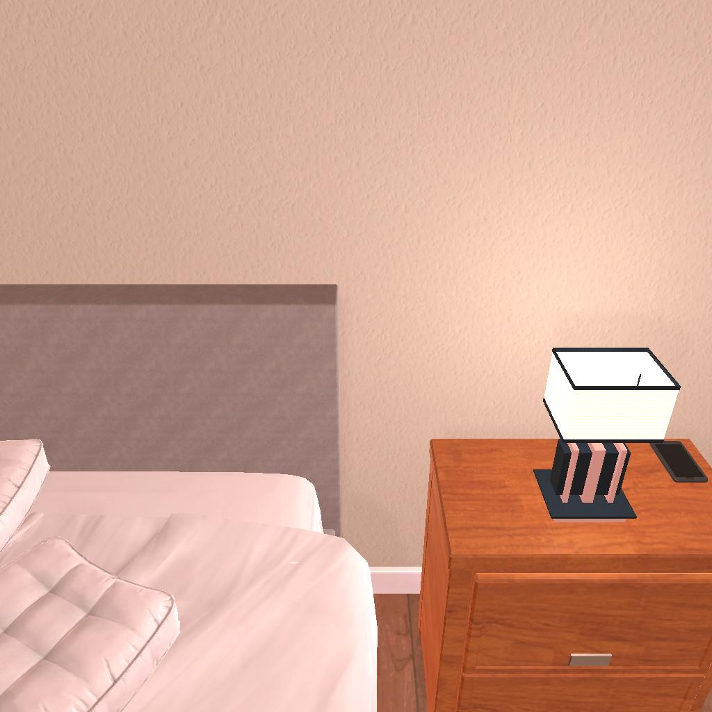

---------------------------------------------------------task: 6---------------------------------------------------------
--------------------------------------------------------------------------------------------------------------------------------------------------------------------
--------------------------------------------------------------------------------------------------------------------------------------------------------------------
Step:--------------------------------------------------------------------------6-------------------------------------------------------------------------------
----------------------------------------
VLM Prompt:
**Task**
Please perform as an embodied AI agent. Our final objective is to put a cd in safe. Below is the plan for completing the task, the current observation, alongside historical data and admissible actions for the next step. Please determine the best action for the next step!
**Plan**
Below is a detailed step-by-step plan to complete the task.
1. Find a CD.
2. Pick up the CD.
3. Find a safe.
4. Place the picked-up CD inside the safe.
**Current Observation**
Displayed is an image capturing the current position of the agent.
**History Information**
Displayed are the previous observations with their corresponding actions.
Current State 1:
1. Place: Unspecified
2. Step Index in Plan: 1
3. Objects: CD, sidetable
4. Action: go to sidetable 1
Current State 2:
1. Place: Sidetable 1
2. Step Index in Plan: 2
3. Objects: CD, credit card, two cellphones
4. Action: Take credit card 1 from sidetable 1
Current State 3:
1. Place: Sidetable 1
2. Step Index in Plan: 2
3. Objects: Credit card, CD (not visible)
4. Action: Put credit card 1 in/on sidetable 1
Current State 4:
1. Place: Sidetable 1
2. Step Index in Plan: 2
3. Objects: CD, Sidetable, Drawer
4. Action: go to drawer 1
Current State 5:
1. Place: Sidetable 1
2. Step Index in Plan: 2
3. Objects: CD
4. Action: go to sidetable 1
Current State 6:
1. Place: Facing a wall
2. Step Index in Plan: 2
3. Objects: No visible objects related to the task
4. Action: Go to sidetable 2
**Admissible Actions**
(1): go to bed 1
(2): go to dresser 1
(3): go to bed 2
(4): go to drawer 2
(5): go to drawer 3
(6): go to drawer 4
(7): go to desk 1
(8): go to garbagecan 1
(9): go to drawer 5
(10): go to drawer 6
(11): go to drawer 7
(12): go to drawer 8
(13): go to drawer 9
(14): go to drawer 10
(15): go to drawer 11
(16): go to safe 1
(17): take pillow 2 from sidetable 2
(18): take pillow 1 from sidetable 2
(19): take cellphone 3 from sidetable 2
(20): use desklamp 1
**Analysis Guideline**
1. Analyze the **History Information** and determine our current step in the plan and our current place.
2. List all visible objects related to the task in the current observation.
3. Analyze the objects in the current observation based on the history and the requirements for the current step, and then determine if we can complete the step with the current observation.
4. Analyze and decide on the most appropriate action to take.
5. Summarize the analysis using the following format: "Analysis: [The summarization of the analysis], The Most Appropriate Action: (i which is the integer.): [Selected action]"
**Notes**
1. We must complete each step of the plan in order and cannot skip steps when the previous ones are not finished.
2. For "Go to" actions listed as "go to xxx [n]", interpret this as there are n distinct actions available: "go to xxx 1", "go to xxx 2", ..., "go to xxx n". Select one specific action from these options instead of using "go to xxx [n]".
3. If receptacles such as drawers, cabinets, and so forth are closed in the current observation, we may try to open them.
4. Pay attention to synonyms and ensure clarity in the terms used.
5. If there is no history available, we are at the first step and the current place is "Unknown".
6. The most appropriate action must be in the **Admissible Actions**, and we cannot generate a new action that is not in the **Admissible Actions**.
**Answer**
Please select the most suitable action by following the **Analysis Guideline**, keeping the above **Notes** in mind.
----------------------------------------
----------------------------------------
VLM Response:
Analysis: Based on the History Information, we are currently at Step Index 2 in the plan which is to pick up the CD. Our current place is unspecified as the last action was to go to sidetable 2 but we are now facing a wall with no visible objects related to the task. Since we need to pick up a CD and no CD is visible in the current observation, we cannot complete this step with the current observation. The most appropriate action is to move to a location where a CD might be found or previously seen. Since the safe has not been located yet, the action related to the safe is not suitable at this time. From the admissible actions and the history, it seems that the CD was last acknowledged at sidetable 1. Thus, the most appropriate action would be to go back to the sidetable where the CD was last observed.
The Most Appropriate Action: (2): go to dresser 1
----------------------------------------
----------------------------------------
>>> Refine VLM Response and Get Pure Action: go to dresser 1
----------------------------------------
-----------------------------------------------------------------
Running time: 11.804538249969482 seconds
Total Money: 2.5894700000000004
-----------------------------------------------------------------
-----------------------------------------------------------------
Summarization Prompt:
**Context**
Analysis: Based on the History Information, we are currently at Step Index 2 in the plan which is to pick up the CD. Our current place is unspecified as the last action was to go to sidetable 2 but we are now facing a wall with no visible objects related to the task. Since we need to pick up a CD and no CD is visible in the current observation, we cannot complete this step with the current observation. The most appropriate action is to move to a location where a CD might be found or previously seen. Since the safe has not been located yet, the action related to the safe is not suitable at this time. From the admissible actions and the history, it seems that the CD was last acknowledged at sidetable 1. Thus, the most appropriate action would be to go back to the sidetable where the CD was last observed.
The Most Appropriate Action: (2): go to dresser 1
**Summary Format**
1. Place: [Specify the current location]
2. Step Index in Plan: [Dispkay the current step number in the plan before taking the current action]
3. Objects: [List the objects relevant to the task]
4. Action: [Describe the most appropriate action without the "(x)" and keep the integer of the object]
Please analyze the **Context** and summarize the analysis using the **Summary Format**.
-----------------------------------------------------------------
-----------------------------------------------------------------
Summarization Response:
1. Place: Unspecified location facing a wall
2. Step Index in Plan: 2
3. Objects: CD, sidetable 1
4. Action: go to dresser 1
-----------------------------------------------------------------
-----------------------------------------------------------------
Text Observation:You arrive at loc 1. On the dresser 1, you see a bowl 1, a mug 1, a cd 1, and a pen 1.
-----------------------------------------------------------------
UNSUCCEED